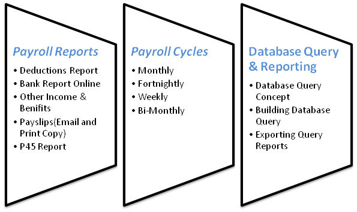

Work / Shift Schedule
Unlimited Self Defined Work/Shift Schedule (anytime, any day)
JAMAICAN BUSINESS SOFTWARE
OASys delivers powerful easy to use tools for human resource information management, payroll processing and time & attendance monitoring.
ONE CONNECTED WORKFLOW
Unlimited Self Defined Work/Shift Schedule (anytime, any day)
Automate Overtime Approval & Payments from User Defined Rules
Manage Leave Entitlement And Usage
FROM ATTENDANCE TO PAYROLL
The system communicates directly with time capture devices (time clocks) manufactured by Anviz and ZK Tech. This allows for a seamless transfer of approved pay hours to be processed via the payroll module, uploaded to any banking platform and notify staff via email with their pay slips attached.
Used by several companies across Jamaica managing cumulatively thousands of employee records with vast differences in roles, compensation and leave entitlement.
The system also supports GL Journals data exchange for various accounting packages. Statutory tax filing obligations (S01, S02) are also fully supported.
See all payroll & HRMS features →
OASYS SOFTWARE SOLUTIONS